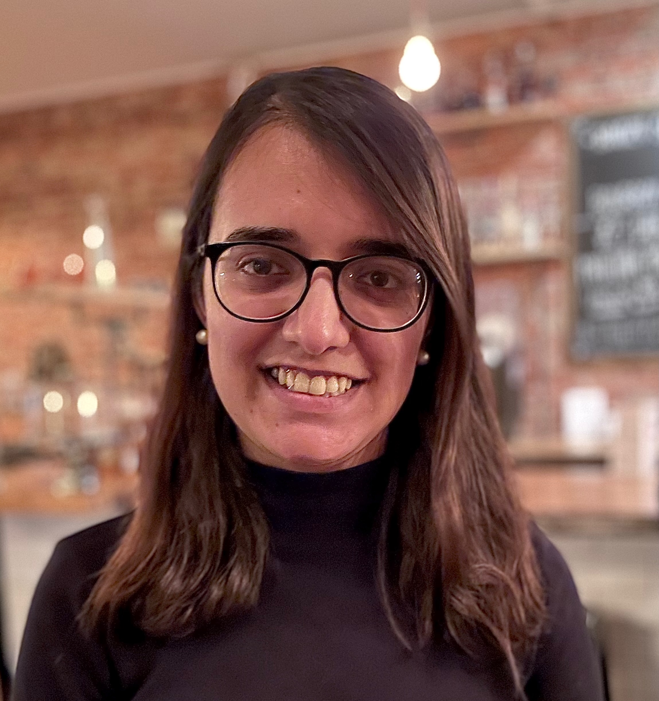

Assistant Professor @ UC Irvine
Dept. of Computer Science
Office: ICS 430C
I am an Assistant Professor in the Department of Computer Science at the University of California, Irvine, where I lead the Security and Privacy of Emerging Computing Technology (SPECT) Lab. My research interests broadly lie in the areas of security & privacy and mobile computing. Through system design, machine learning, and human-centered methods, my research investigates security and privacy threats in emerging computing platforms, aiming to design secure systems that are not only technically robust but also aligned with users' needs and preferences.
I received my Ph.D. in Computer Science from Purdue University, where I was advised by Dr. Z. Berkay Celik and was a part of the PurSec Lab.
If you are a student at UCI, there are research opportunities for undergraduate/graduate students interested in the security and privacy of emerging computing platforms. Please email me for more details.